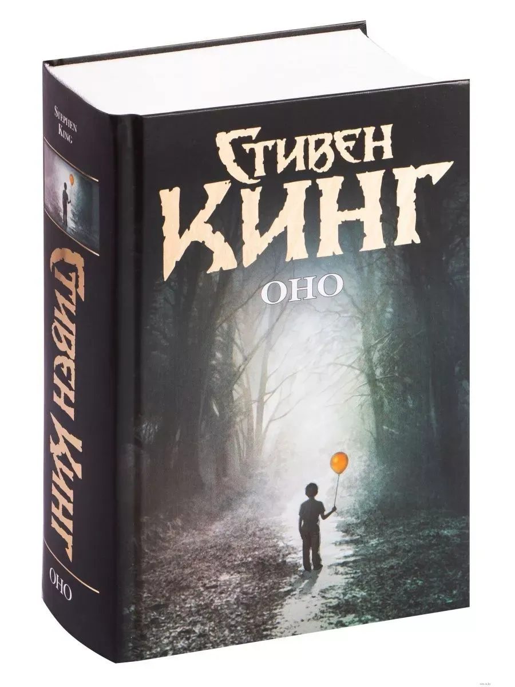

Нажмите на картинку для увеличения
В маленьком американском городке Дерри дети продолжают исчезать. Их находят мертвыми, но никто не знает, кто или что стоит за этими убийствами. Группа подростков, называющих себя "Клуб неудачников", сталкивается с ужасающим существом, которое умеет принимать облик самых страшных страхов. Оно прячется в канализации и просыпается каждые 27 лет, чтобы снова убивать...
Один из самых знаменитых романов Стивена Кинга, по которому сняты фильмы и сериалы.
© 2026 Интернет-магазин "Мир книг". Все права защищены.